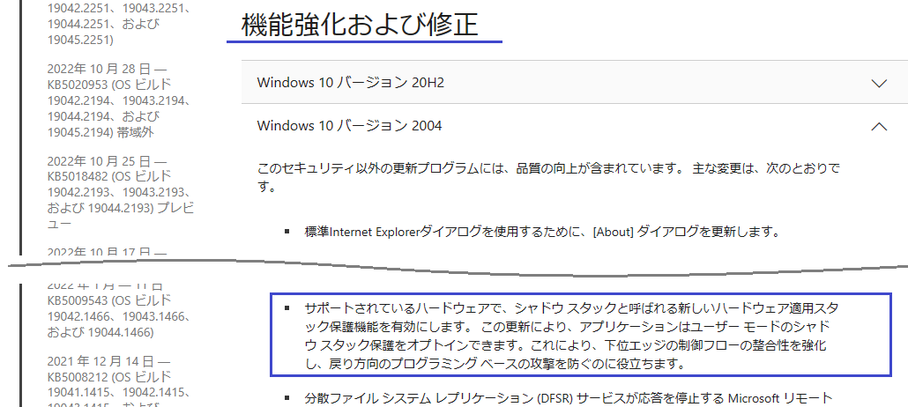
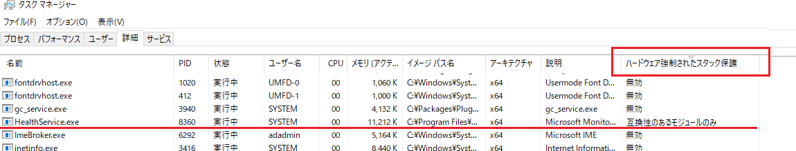
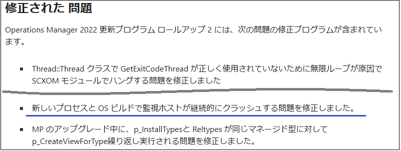

皆様こんにちは、System Center サポートチームの 石原 です。
今回は、ハードウェア ベースのセキュリティ機能の CET (Control-flow Enforcement Technology) が有効な場合、SCOM エージェントのプロセスが短時間でクラッシュする既知の問題の対処方法について説明します。
CET (Control-flow Enforcement Technology) が有効な場合の SCOM エージェントの既知の問題について
CET (Control-flow Enforcement Technology) をサポートするプロセッサを搭載したハードウェアにインストールした Windows は、ハードウェア強制されたスタック保護機能 (Hardware-enforced Stack Protection) を有効にすることができます。
※ 注意：ハードウェア強制されたスタック保護機能は、新しい OS ビルドで有効な機能になります。
Windows 10 では、20H1 (19041) and 20H2 (19042) 以降の OS ビルドでサポートされるようになっています。
ご参考：2020 年 11 月 30 日 — KB4586853 (OS ビルド 19041.662 および 19042.662)

ハードウェア強制されたスタック保護機能 (以降、本機能) は新しいセキュリティ機能であり、本記事の公開日時点の SCOM エージェントは、いずれのバージョンも本機能を使用しません。
そのため、SCOM エージェント用には本機能は無効で良いですが、SCOM 2022 UR2 までは、明示的に本機能を無効にする設定が SCOM エージェントに組み込まれていません。本機能をサポートする環境に SCOM 2022 UR2 より前の SCOM エージェントをインストールした場合、SCOM エージェントは本機能が有効なプロセスとして起動します。
■ 参考：SCOM エージェントのプロセス (※ SCOM エージェントのプロセスは HealthService.exe ) が
ハードウェア強制されたスタック保護機能を有効な状態で起動した際の画面ショット 
SCOM エージェントが、ハードウェア強制されたスタック保護機能を有効な状態で起動すると、短時間でプロセスがクラッシュして、該当サーバーが SCOM で管理できない状態になる既知の事例があります。
対処方法 ① 更新プログラムのロールアップを適用
SCOM 2022 をご利用の場合、更新プログラムロールアップ 2にて修正されていますので、更新プログラムロールアップ 2を適用してください。更新プログラムロールアップ 2 を適用することで、ハードウェア強制されたスタック保護機能が無効化された SCOM エージェントにアップデートすることができます。
・SCOM 2022 更新プログラムのロールアップ 2 のダウンロードと適用手順 
※ 更新プログラムのロールアップの適用手順につきましては、以下のサポートブログもご参照ください。
SCOM の 更新プログラムのロールアップの適用手順
対処方法 ② PowerShell コマンドによる対処
すぐには更新プログラムのロールアップを適用できない場合や SCOM 2019 をご利用の場合、PowerShell コマンドにて SCOM エージェント プロセスのハードウェア強制されたスタック保護機能を無効化することで回避できます。
実行手順は以下の通りです。
- SCOM エージェントをインストールしたサーバーにログインします。
- PowerShell を管理者で起動します。
- 以下のコマンドで SCOM エージェント プロセスのハードウェア強制されたスタック保護機能を無効化します。
Set-ProcessMitigation -Name MonitoringHost.exe -Disable UserShadowStack - 以下のコマンドで SCOM エージェント プロセス (HealthService.exe) を再起動します。
Restart-Service -Name HealthService
ご参考 (英語サイト)
ハードウェア強制されたスタック保護機能について
・Understanding Hardware-enforced Stack Protection
・Developer Guidance for Hardware-enforced Stack Protection
※本情報の内容（添付文書、リンク先などを含む）は、作成日時点でのものであり、予告なく変更される場合があります。